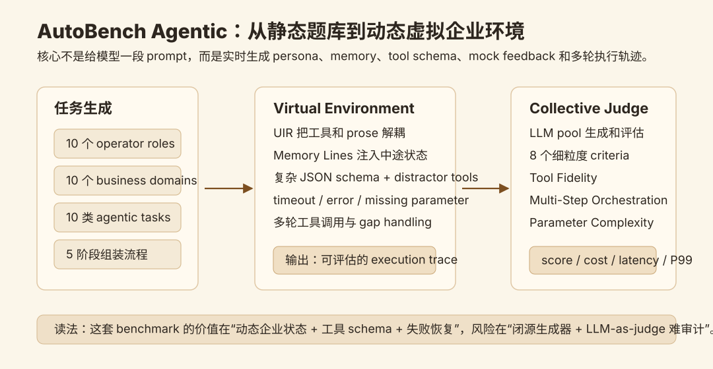
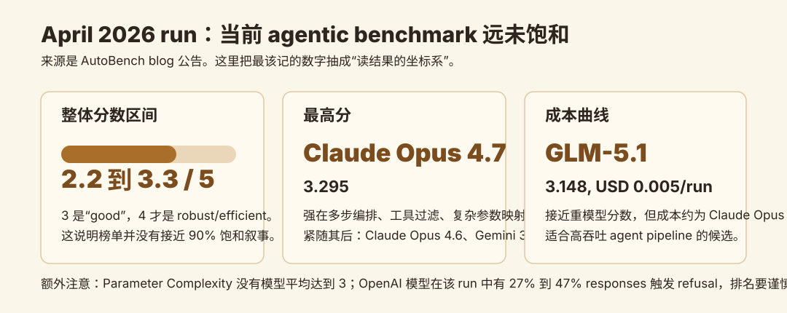

AutoBench Agentic-1：动态虚拟企业环境里的 agent benchmark
- Source: AutoBench Blog
- Author: AutoBench Team
- Published: 2026-04-20
- 原文体量: 本地抽取约 1707 words，页面标注 9 min read
- 类型: benchmark/product blog，不是正式论文
- 关键词: dynamic benchmark, agentic evaluation, virtual environment, UIR, LLM-as-a-judge, cost-latency frontier
读法：给人和 agent 的路标
这篇不用当论文读，应该当作一个 agent benchmark 设计备忘录 来读。它最有价值的地方不是某个模型排第一，而是把“真实 agent 任务为什么难测”拆成了几个工程维度：动态 business context、operator persona、memory line、native tool schema、distractor tools、mock errors、多轮执行、成本和延迟。
给人读，先看 一句话判断、两张图和 April 2026 run 怎么读。给 agent 以后检索，关键词是：dynamic virtual environment、Universal Intermediate Representation、memory lines、parameter complexity、cost per run、LLM-as-a-judge、closed-source benchmark risk。
一句话判断
AutoBench Agentic 的核心价值在于把 agent benchmark 从“静态题目 + 单轮答案”推进到“运行时生成的虚拟企业环境 + 多轮工具轨迹评估”；但它当前仍是闭源产品公告，LLM-as-a-judge、动态数据生成和 leaderboard 分数都需要谨慎看，适合作为 benchmark 设计参考，不适合直接当作模型能力的最终判决。
图表优先读法
| 先看 | 图/表/案例 | 读完应该抓住什么 |
|---|---|---|
| 1 | Agentic benchmark map | 它测的是动态企业环境里的多轮工具轨迹，不是普通 QA |
| 2 | Results 图 | 分数要和 judge、任务生成方式、闭源 leaderboard 一起读 |
| 3 | 完整 task 例子 | 这类 benchmark 最该保留 prompt、环境状态、工具轨迹和判分逻辑 |
| 4 | 风险小节 | LLM-as-judge 和动态数据生成会让可复现性变弱 |
先看我整理的机制图

这张图抓的是原文的主线：AutoBench Agentic 不只是生成一段 prompt，而是先把企业任务映射到一个 Universal Intermediate Representation，再动态注入 persona、memory、native tool schemas、干扰工具、错误返回和缺失参数，让模型真的走一遍 agent execution trace。最后用 Collective-LLM-as-a-Judge 从多个维度评估这条 trace。
要注意三个点：
- Virtual Environment 是核心对象：它想模拟的是 agent 在生产环境里接到一个“已经在进行中”的任务，而不是白纸题目。
- 工具 schema 比自然语言更重要：原文强调 UIR 会构造接近 LangChain、AutoGen 或 provider native API 的
tools[]JSON 数组，模型必须学会选工具、填参数、处理异常。 - 评测对象是轨迹，不是最终文本：judge 看的包括 Tool Fidelity、Multi-Step Orchestration、Parameter Complexity 等 8 个细粒度 criteria。
它想解决什么问题
原文对当前 agent benchmark 的批评主要有两条：
- 太窄：很多 benchmark 只覆盖单一 niche，例如 telecom routing 或 rigid system instruction，和企业里混乱、多角色、多系统的真实工作距离很远。
- 太静态：pre-baked dataset 容易被训练到，模型可能记住 benchmark pattern，而不是真的具备动态推理、工具编排和失败恢复能力。
AutoBench Agentic 的应对方式是运行时生成测试环境。每次 run 都重新组合角色、业务域、任务类型、工具 schema 和 mock feedback，用动态性降低过拟合风险。原文把这个说成 strictly un-gameable，我会更保守地理解为：它比静态数据集更难被简单记忆，但并不天然不可被 gaming，因为生成器、judge rubric 和模型池本身仍可能形成可学习的偏置。
一个完整 task 大概长什么样
下面是我基于原文描述整理的 schematic example，不是 AutoBench 发布的原始样本。它用于说明这种 task 的完整形态：
| 组件 | 示例 |
|---|---|
| Operator persona | Senior Cloud DevOps Engineer |
| Business domain | cloud migration / incident response |
| Memory line | 前一轮数据库查询因为 syntax error 失败，客户还在线等待 |
| Tool schema | query_logs, migrate_instance, notify_customer, rollback_config，每个工具有复杂 JSON schema |
| Distractor tools | 名字相近但不该调用的工具，例如只读 audit 工具或 billing 工具 |
| Mock response | 工具可能返回 timeout、missing parameter、permission denied 或部分结果 |
| Agent task | 先定位失败原因，再补齐参数，必要时诚实请求缺失信息，最后给出可执行下一步 |
| Judge 关注点 | 是否选对工具，参数是否填对，多轮恢复是否合理，遇到缺信息时有没有 hallucinate |
这类任务和普通文本 benchmark 的关键差别在于：模型必须在 状态、工具、错误和业务目标 之间持续对齐。一个只会写最终答案的语言模型，不一定能在这种 setup 里稳定工作。
它到底测什么
AutoBench Agentic 覆盖三组 10 x 10 x 10 的组合：
| 维度 | 原文说法 | 我的读法 |
|---|---|---|
| 10 operator roles | 不同业务 persona | 角色会改变措辞、权限、目标和风险偏好 |
| 10 business domains | 不同企业场景 | 避免 benchmark 只围绕单一垂直领域 |
| 10 agentic task types | 不同工具调用和执行模式 | 可以拆出 single tool、tool selection、multi-step、parameter complexity 等能力 |
它还不只报告总分，而是报告：
- performance score，1 到 5 分；
- average response cost；
- latency；
- P99；
- 按 10 类 agentic calls 细分的结果。
这点对真实 agent pipeline 很重要。一个模型如果总分不错但 P99 很差，或者 tool selection 稳但 parameter mapping 很差，部署策略会完全不同。
April 2026 run 怎么读

原文给出的最关键数字是：
| 观察 | 数字 / 结论 |
|---|---|
| 总体分数区间 | 所有模型在 2.2 到 3.3 / 5 |
| 分数含义 | 3 是 good，4 才是 robust/efficient，5 是 excellent |
| 第一名 | Claude Opus 4.7, score 3.295 |
| 后续强模型 | Claude Opus 4.6、Gemini 3.1 Pro preview |
| 成本效率点 | GLM-5.1, score 3.148, USD 0.005 per run |
| 成本对比 | GLM-5.1 约比 Claude Opus 4.6 便宜 5x |
| 关键薄弱项 | Parameter Complexity 没有模型平均达到 3 |
| OpenAI 异常 | OpenAI 模型有 27% 到 47% responses 触发 refusal |
我觉得最值得记的不是“Claude Opus 4.7 第一”，而是 Parameter Complexity 仍然卡住。这和我们平时用 coding/agent 模型的体验一致：模型能做 high-level plan，但具体到 schema 选择、参数补齐、边界条件和异常恢复，仍然容易出错。
这篇的强点
强点 1：把 benchmark 对齐到 agent 的真实失败面。 真实 agent 失败通常不是因为它不会写一段解释，而是因为它选错工具、漏填参数、没处理 timeout、没意识到已有 memory 状态，或者在信息不足时硬编。AutoBench Agentic 把这些失败面显式放进任务。
强点 2：成本和延迟被放进 leaderboard。 agent 系统不是 single-shot QA。多轮调用里，成本、latency 和 P99 可能比 1 个点的 accuracy 更重要。GLM-5.1 这种“分数接近但成本极低”的模型，只有在 cost-performance 视图里才会被看见。
强点 3：动态生成比静态题库更接近生产。 persona、memory line、mock feedback 和 distractor tools 每次变动，可以逼模型处理分布变化。它不等于完全不可过拟合，但比固定 JSON task list 更有现实意义。
需要警惕的地方
疑点 1：当前 Agentic 版本闭源。 原文明确说 AutoBench 1.0 是 open-source，但 AutoBench 2.0 和 Agentic evolution 是 proprietary and closed-source。也就是说，外部读者很难审计任务生成器、judge prompt、rubric、模型池组成和数据过滤。
疑点 2：Collective-LLM-as-a-Judge 仍然是 judge。 多个 LLM judge 可以降低单模型偏置，但不能自动消除偏置。尤其是 agent trace 的评价很依赖 rubric 细节：什么算合理 deferral，什么算参数复杂度，什么算多轮恢复成功，都可能影响分数。
疑点 3：“un-gameable”说法太满。 动态生成确实更难 memorization，但如果生成器、UIR schema、task taxonomy 和 judge rubric 长期稳定，模型或开发者仍可能学会针对这个分布优化。
疑点 4：OpenAI refusal 异常污染了本轮比较。 原文说 OpenAI API anti-distillation filters 让 27% 到 47% responses 返回 refusal。因此这轮榜单不能简单解读成“OpenAI agentic reasoning 更差”，至少要把 safety/refusal channel 和 reasoning failure 分开。
对我的价值
这篇对我最大的价值不是选模型，而是给自己的 agent/wiki/paper-reading pipeline 提醒了一个 benchmark checklist：
- 不要只看最终答案：要记录完整 trace、工具选择、参数、错误恢复和人类干预点。
- 任务要有状态：memory line 很重要，agent 经常是在半途中接任务，不是在空白世界里开始。
- schema 要真实：如果工具 schema 永远干净简单，测不出真实调用能力。
- 评估要有成本维度：paper-reading、代码修复、sandbox 构建这类长流程里，USD/run、latency 和 P99 都是工程指标。
- 要保留闭源怀疑：benchmark 分数有用，但不能替代可审计数据、可复现任务和自己场景下的 shadow eval。
建议动作
我会把 AutoBench Agentic 放在 “agent evaluation / benchmark design” 这条线里，作为设计参考。它不适合作为模型排名的唯一依据，但很适合指导我们以后做自己的小型 eval：动态工具 schema、memory line、错误返回、细粒度 rubric、成本和延迟都应该进评测表。